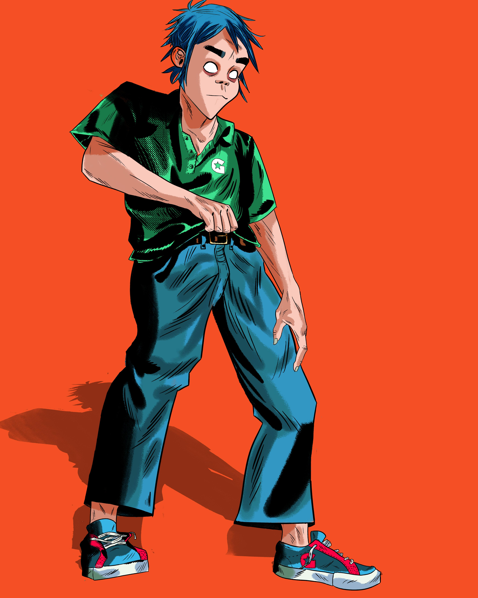
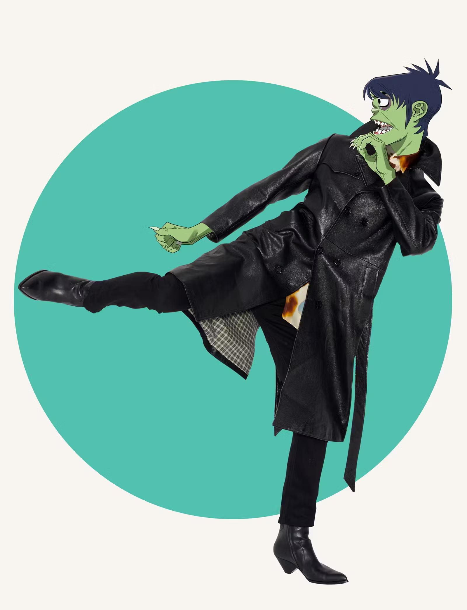

Los integrantes
Cuatro personajes que dan vida al universo musical de Gorillaz.

2-D
Nombre real: Stuart Harold
Personalidad:amable, distraído, ingenuo y algo despistado.
Características físicas: alto y delgado, cabello azul y ojos negros
Instrumento y función: vocalista principal, tecladista y ocasionalmente pianista

Murdoc
Nombre real: Murdoc Fausto Niccals
Personalidad:orgulloso, arrogante, sarcástico, provocador y egocéntrico.
Características físicas: piel verdosa, nariz torcida, dientes afilados y sonrisa amplia.
Instrumento y función: bajista. fundador y líder autoproclamado de Gorillaz. Participa en la dirección musical y aporta una estética oscura y provocadora.

Noodle
Nombre: Noodle
Personalidad:reservada, independiente, alegre y reflexiva. También se caracteriza por su valentía y determinación.
Características físicas: mujer japonesa de baja estatura, cabello oscuro y corto y ojos negros almendrados.
Instrumento y función: guitarrista, corista y ocasionalmente tecladista.

Russel
Nombre real: Russel Hobbs
Personalidad: maduro, tranquilo, educado, amable y protector.
Características físicas: corpulento, de gran estatura, piel oscura y cabeza rapada.
Instrumento y función: baterista y percusionista.Aporta las bases rítmicas y las influencias del hip-hop. También representa una figura de apoyo y protección para sus compañeros.